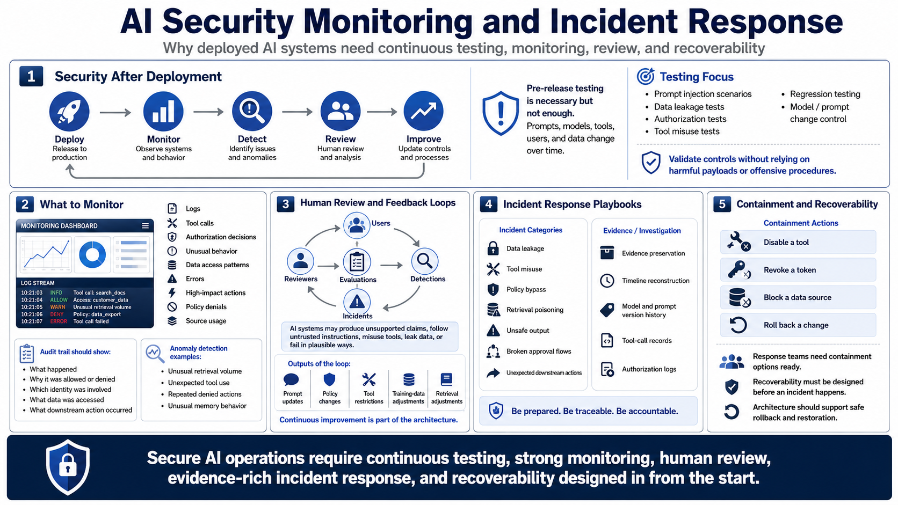

Evaluation, Monitoring, and Incident Response
Connecting to LMS... Progress: in progress

Narration
AI security must be monitored after deployment because prompts, models, tools, users, and data change over time. Pre-release testing is necessary, but it is not enough. Security testing should include prompt injection scenarios at a high level, data leakage tests, authorization tests, tool misuse tests, regression testing, and model or prompt change control. The goal is to validate controls without relying on harmful payloads or offensive procedures.
Monitoring should include logs, tool calls, authorization decisions, unusual behavior, data access patterns, errors, high-impact actions, policy denials, and source usage. Audit trails should show what happened, why it was allowed or denied, which identity was involved, what data was accessed, and what downstream action occurred. Anomaly detection can help surface unusual retrieval volume, unexpected tool use, repeated denied actions, or unusual memory behavior.
Human review remains important. AI systems can produce unsupported claims, follow untrusted instructions, misuse tools, leak data, or fail in ways that look plausible. Feedback loops from users, reviewers, detections, incidents, and evaluations should inform prompt updates, policy changes, tool restrictions, and training data or retrieval adjustments. Continuous improvement is part of the architecture.
Incident response playbooks should cover data leakage, tool misuse, policy bypass, retrieval poisoning, unsafe output, broken approval flows, and unexpected downstream actions. Response teams need evidence preservation, timeline reconstruction, model and prompt version history, tool-call records, authorization logs, and containment actions such as disabling a tool, revoking a token, blocking a data source, or rolling back a change. Recoverability must be designed before an incident happens.